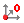

Definition dialog page
Reference system
The frame origin coordinates are dependent on the reference system set here.
Move
Move: Move the frame origin.
Align
Reference, Workplane: Frame origin and orientation are adopted from the active reference system or the workplane.
3 Points: Specify the frame orientation with three points. Point 1 = origin, Point 2 = X direction, Point 3 = Y direction.
MillTurn
Select required orientation (1) and/or set rotation around the X, Y, or Z axis (2).
Angle
A, B, C: The resulting angle (Euler angle) is displayed and may be modified.
Origin
X, Y, Z: The resulting frame origin is displayed and may be modified.
Vectors
X axis, Y axis, Z axis: Shows the vector components of the linear axes.
Select: Only available for hyperMILL for SolidWorks. Various elements can be used to define a frame.
Face, Plane, Sketch, Coordinate system: Select the required element directly in the graphics window.
View
Only available for hyperMILL for SOLIDWORKS.
Set frame: Sets the frame to the current view.
Define frame
Define coordinate system: Select an element in the graphics window and specify the origin of the coordinate system.
Reverse the direction of the respective axis.
Change coordinate system
 Move the coordinate system origin or project the coordinate system in the direction of the X, Y, Z axis.
Bounding box
Position the coordinate system using a bounding box. Click the Display button to show the current bounding box.
The color of the bounding box corresponds to the default color of the stock model (dialog → → ).
 Enter the offset of the bounding box directly in the input line or define using the arrow keys.
Enter the offset of the bounding box directly in the input line or define using the arrow keys.
Use the icons in the Change coordinate system area to position the coordinate system at the required location.
Associative Workplane
An associative workplane is linked with the entities, selected for creation. Modifications to the entities are carried over to the linked workplane. To use an associative workplane,proceed as follows:
-
Activate Parametric Modelling,
-
select the desired Frame or Origin,
-
activate the Associative workplane function on the dialog page Definition and select the desired workplane.
|
|
An associative workplane is marked with a lock symbol in the hyperMILL browser. |